01 Overview概述
Bringing the Independent Study into TECHIN 515把独立研究和515项目结合起来
For Phase 3, I decided to combine the Independent Study with work from another course. The chosen project is the TECHIN 515 Team Project: AuraSync — a desktop device with a diffuse LED glow effect. The enclosure needed two parts made with two different methods: a frosted transparent lid, and a white base.
第三阶段，我打算把独立研究和其他课程里的项目结合起来。我选择了TECHIN 515的Team Project：AuraSync——一个带有漫射LED光效的桌面设备。 外壳需要用两种方法分别制作两个部分：磨砂透明上盖，以及白色底座。
The lid needs a frosted glass effect so the internal LED light diffuses softly through it. We went with 3D print + silicone mold + clear resin casting + sanding. The base went to SLA printing for its better precision and surface quality.
上盖需要磨砂玻璃质感，使内部LED灯光柔和透出，我们选择了3D打印+硅胶模具+透明树脂翻模+打磨的工艺。 底座则选用SLA打印，精度更高，表面质量也更好。
Materials Used使用材料
02 Process制作过程
Step by step制作步骤
Part A第 A 部分
Transparent Lid — Silicone Mold + Resin Casting透明上盖——硅胶翻模
The lid is the transparent section of the enclosure. The goal is a frosted glass effect so the internal LEDs diffuse softly through it. After consulting Kevin, we ruled out SLA printing for transparent parts (it works but involves some extra steps, as Kevin put it — "a detour, but solvable") and went with 3D print + silicone mold + clear resin casting + sanding instead. Kevin also reminded us to fillet the inner face of the lid — otherwise the interior corners are nearly impossible to sand.
上盖是外壳的透明段，目标是磨砂玻璃质感，使内部LED灯光柔和透出。在询问Zubin的意见后，我们放弃了树脂SLA打印透明件（Zubin说会稍微绕弯，但能够解决），最终选择3D打印+硅胶模具+透明树脂翻模+打磨的工艺。Kevin也提醒我们为盖子的内面做一下圆角，不然打磨内面时很难触及转角处。
Kevin's single-mold ideaKevin 分享的单体模思路
Kevin shared a single-piece mold approach: instead of a traditional two-part mold, you pour silicone directly around the master inside an outer box, while a placeholder structure inside the cavity displaces the bulk of the silicone — significantly cutting material use. It's a clever design, and we planned to follow it.
Kevin分享了单体模思路：不采用传统两开模，而是在外箱内将硅胶直接浇注于母模周围，同时以内部占位结构排开大体积硅胶，显著降低材料用量。这是一个很巧妙的设计，我们准备参照这个思路进行翻模制作。
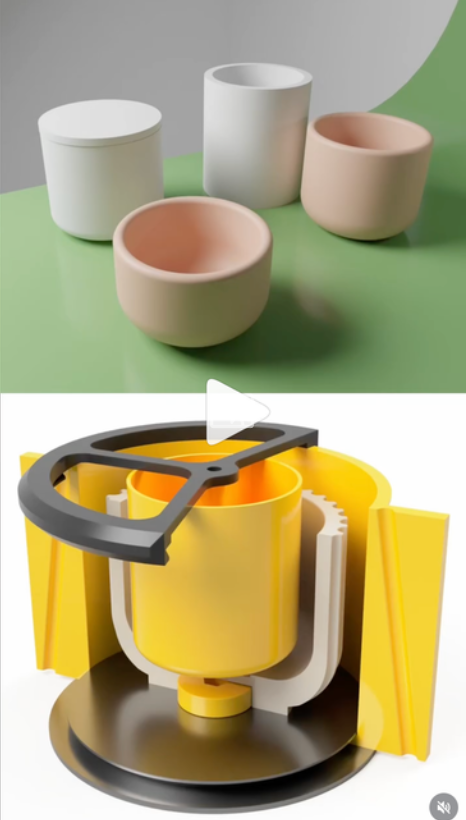
Designing the silicone mold设计硅胶模具
With two previous sessions under our belts, making silicone molds felt almost routine. As it turned out, mold design still demands more experience than we had — and cutting corners is not an option. We made quite a few mistakes this round, which gave us a lot of recovery experience. Let me walk through them one by one.
有了前面两次经验，硅胶模具制作似乎已经是驾轻就熟了。但事实证明模具设计还是需要更多的经验，并且偷不得懒。我们在本次制作模具的过程中犯了很多错误，这给了我们很多补救修正的经验，待我一一道来。
The lid is a thin-walled cylindrical cap with holes. We can't mold the holes directly — they would connect the two mold sections and lock the master in place, making it impossible to demold. The obvious fix: cover the holes with tape, so the silicone captures only a thin membrane over each hole that's easy to pop out afterward.
上半的模具是一个带孔的薄壳圆柱盖子，我们不能直接翻模出带孔的模型，因为孔洞会导致两部分模具相连，锁死原件。应对方法也很显然：贴上胶带封闭孔洞，翻模后那里的硅胶壁很薄，便于手动扣出圆孔。
Following Kevin's single-piece mold concept, the mold needs to be suspended above the base: silicone seals the top and leaves an inlet for resin. Our design is shown below — but here's where we made the first mistake: to keep the center cylinder as thin as possible, we designed something like a champagne flute. We forgot about demolding entirely, and the shape created an undercut. That caused a lot of trouble later.
我们参考Kevin给的单体模具设计，这种设计要求模具相对于底面悬空：硅胶能够封顶，并预留出树脂倒入的入口。我们做出的模具设计如图，但这时我们犯了第一个错误：为了让"需要切割的圆柱"尽量细，做了一个类似于高脚杯的结构，完全忽略了取出模具的合理性，造成了undercut，这给我们后面翻模带来了不少困难。
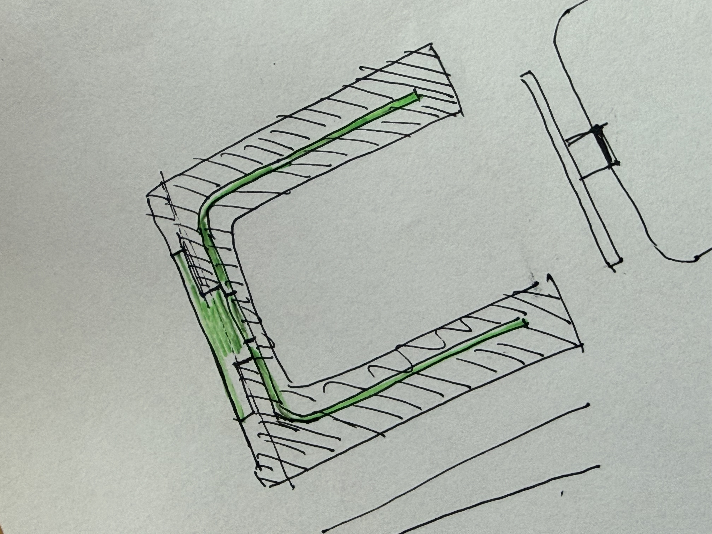
Making the silicone mold制作硅胶模具
Same as before: cardboard outer box around the 3D-printed PLA master, silicone mixed to ratio and degassed in the vacuum chamber, then poured in to prevent bubbles.
与之前一样，以硬纸板在3D打印PLA母模外搭建外箱，硅胶按比例调配后在真空腔中脱泡再灌注，防止气泡残留。
This is where we made the second mistake. The single-piece mold design requires an internal placeholder to be suspended inside the cavity while the silicone cures — displacing volume and saving material. Ideally this should be a 3D-printed piece with a rigid handle or crossbeam attached to the outer box, rough-surfaced and slightly flexible for easy demolding.
这个时候我们犯了第二个错误：我们设计的单体模具需要在灌注硅胶的过程中使用合适的内部占位结构悬空在原件的空腔内。理论上应该使用一个带有固定结构（把手或横梁）的3D打印件，粗糙且有弹性，便于取出脱模。
To save time, we pressed a glass jar (with a wooden stick hot-glued across it as a crossbeam) into the wet silicone as the placeholder. Kevin had jokingly warned us he would never pick glass. We went ahead and used it anyway. Sure enough — after curing, the silicone bonded tightly to the smooth glass walls with no way to compress or deform the jar. Getting it out was basically impossible.
我们为了节省时间，选择将一只连有木片（热熔胶固定，当做横梁）的玻璃杯压入湿硅胶中央作为内部占位结构。Kevin曾经开玩笑警告过我们说"他绝对不会选玻璃"，但我们还是不怕死地用了。果然——硅胶固化后紧贴光滑玻璃壁形成强附着，而且玻璃没有弹性也难以压缩变形，瓶子几乎无法取出。
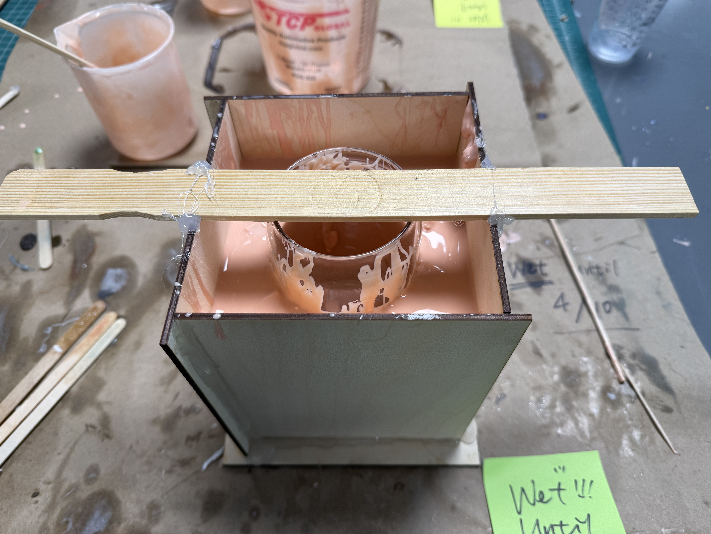
With Kevin's help, we finally extracted the jar by injecting air with a syringe to break the vacuum seal. The PLA master was also stubborn to demold — the undercut from the design, plus the silicone wall being too thick to flex easily, plus no air gap between resin and master. In the end we had no choice but to do a wiggle cut through the silicone to free the master. The upside: when you press the cut mold back together, it still seals reasonably well.
最后在Kevin的帮助下，我们通过针管气泵注气打破密封，成功将玻璃瓶取出。3D打印的原件也脱模困难——因为设计造成的undercut，加上硅胶壁过厚不容易形变，以及树脂与原件之间无气隙。最后没有办法，只能用z字型切割切割硅胶模具才将原件取出。好在这种切割方式原样合上后，还是能够做到某种程度上的密封。
The mold had one more issue: silicone ran short mid-pour. We filled the gaps with recycled silicone offcuts, but the scraps left 3–4 small voids and pitting defects in the mold surface. All fixable in post-processing.
模具还有一个问题：硅胶不足，我们加入了回收的硅胶碎块填充，碎块和原件之间形成了一些空腔，导致模具有3–4个大大小小的凹陷孔洞缺陷。不过这些都可以通过后期处理解决！
With the mold done, we poured clear epoxy resin and waited. Because the part is thin, Kevin recommended waiting 48 hours instead of the usual 24 — letting the resin harden fully before demolding to prevent unwanted distortion.
接着我们灌入树脂进行翻模。因为模型比较薄，Kevin建议等待48小时使树脂完全干透、硬化，防止脱模时造成不需要的形变。
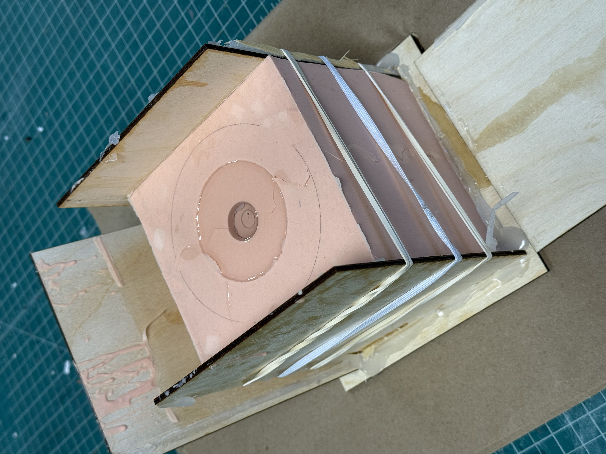
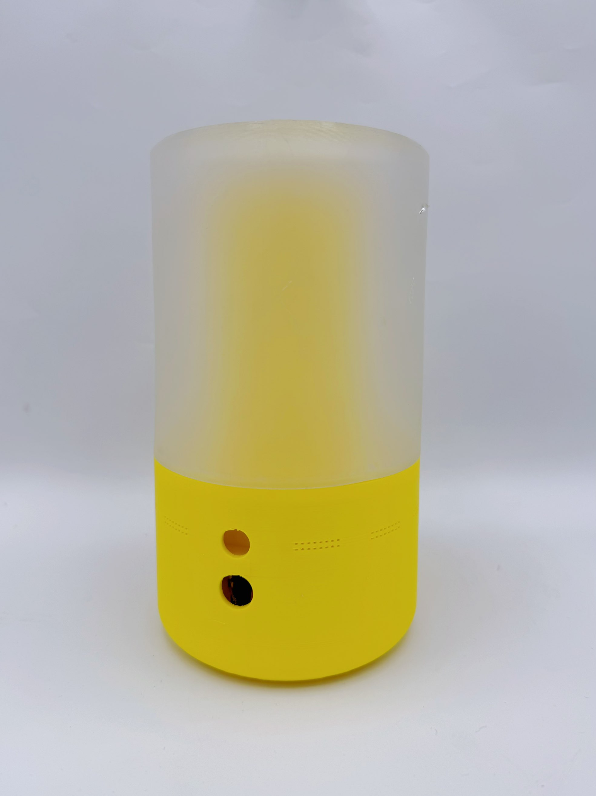
The demolding itself was also a fight. For some reason the silicone mold stuck hard to the resin (something we hadn't encountered before) — we suspect it was the undercut voids acting as suction cups. We eventually had to cut the mold open and wrestle the resin part out.
取出树脂模型也花了我们很大一番功夫。硅胶模具和树脂模型的黏连非常严重（之前没有遇到过），我们猜测是因为模具缺陷导致的undercut以及真空吸附问题。最后没有办法，我们切开了模具，花了九牛二虎之力取出了树脂模型。
But — the piece looked great even unfinished. The frosted quality was already satisfying.
令我们欣慰的是，未经切割打磨的模型效果其实就已经相当不错！磨砂的质感令人相当满意。
Cutting, drilling, and repair切割、钻孔与修复
Two finishing steps: trim the excess base with a band saw, then drill the misting port on top.
翻模完成的树脂上盖需要两步收尾：用条锯裁去多余边缘，再在顶部钻出雾化口。
The band saw cut went fine — just keep the part clamped securely and stay safe.
我们首先用小带锯进行了手动切割（去除用于使模型在硅胶中悬空的支撑圆柱）。这里要注意的就是做好模型的固定，注意安全即可。
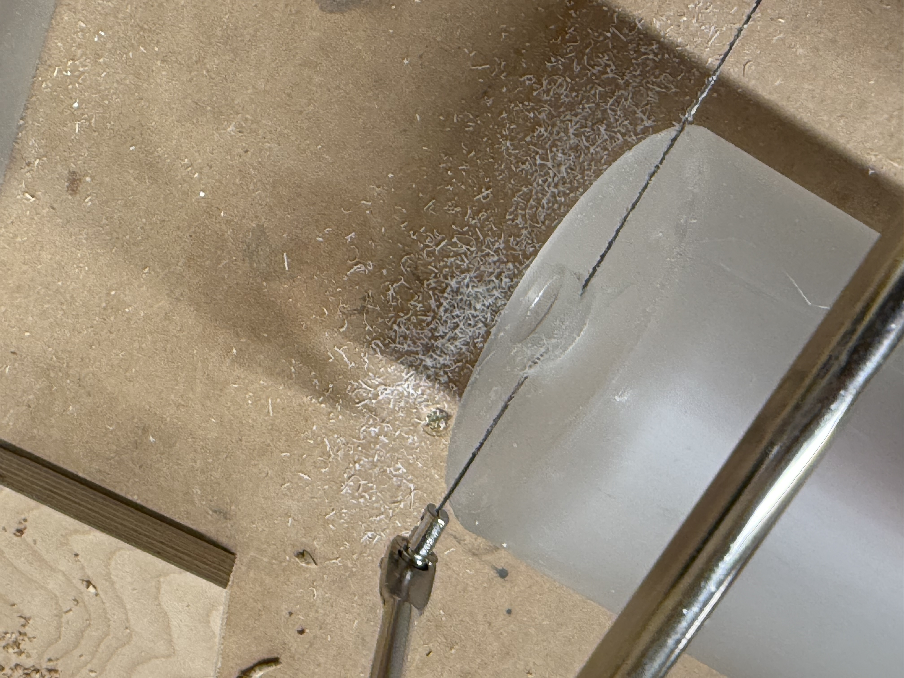
Then the drill. The hole appeared — but the resin cracked: the moment the bit punched through, the resin fractured radially outward from the hole.
然后进行了钻孔。但这里出了点问题：用钻打孔的时候，孔是打出来了，但是树脂，碎裂了：钻头钻穿瞬间，树脂从孔缘向外放射状开裂。
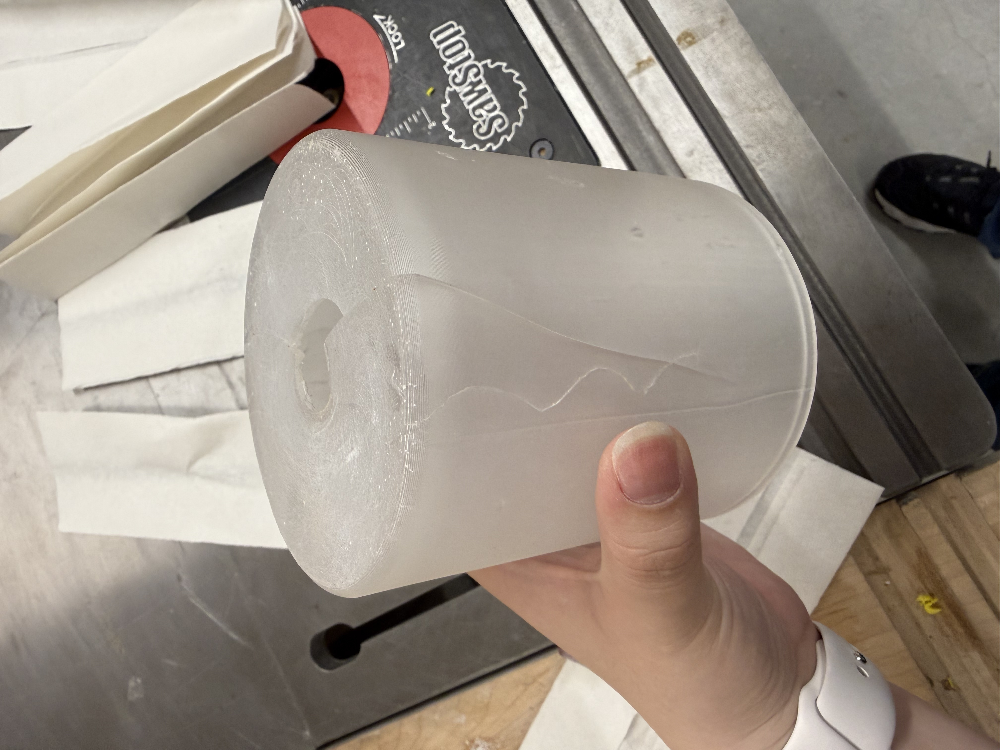
Utterly disheartening after all that effort. But we didn't give up — I asked Kevin if there was a fix. Two options: (1) resin repair (same material, likely better result, 24-hour cure); (2) UV glue + UV light (different material, might show, but fast). Meanwhile, Lucia re-modeled the internal placeholder to avoid the glass-jar fiasco if we needed to remold. (We didn't end up needing it.)
万念俱灰，因为付出了很多但是碎了。不过我们没气馁，我询问了Kevin有没有解决方法：可以重做，也可以修补。修补有两种选项：树脂修补（材质相同，效果也许会更好，需要24小时）；UV胶+UV照射（材料不同，可能会有问题，但快速修补）。与此同时，Lucia为了避免玻璃杯的惨剧再次发生，重新建模了内部的占位结构，以备修补失败时重新翻模（不过最终没用上）。
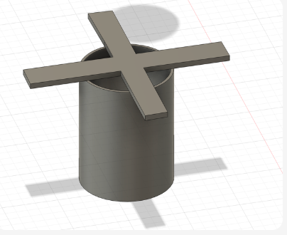
Kevin told us upfront: even repaired cracks are hard to make fully invisible — resin may not bond the fracture surfaces perfectly. We chose to try same-material repair anyway. Same material means the resin bonds chemically rather than just adhering at the surface — structurally, the seam becomes one piece. After sanding, color, transparency, and texture match almost perfectly.
Kevin告诉我们，就算修补裂缝的痕迹也很难完全消除，因为树脂可能很难完美连接断面。我们最后选择了使用相同材料填补。使用相同材料填补，树脂与周围结构形成化学键合而非单纯的表面粘附——接缝从结构上变为一体。打磨后颜色、透明度与表面质感几乎与原件完全一致。
We prised the cracks open, worked resin into the gaps, pressed the fragments back together, and used the mold plus rubber bands as a clamp to hold everything tight during the 24-hour cure.
我们想到的方法就是尽量掰开裂缝后倒入树脂并涂抹，然后放入断片，让树脂尽可能进入裂缝，再用模具+橡皮筋外加一些束缚的压力，让断裂处尽量紧紧相接。
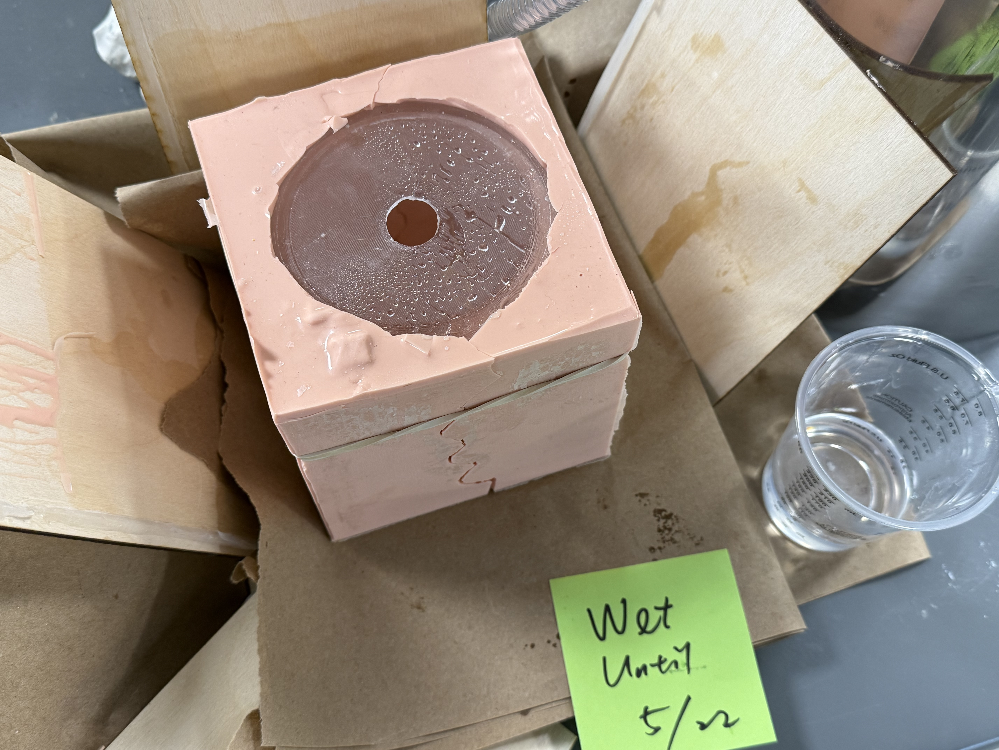
The result was surprisingly good. After 24 hours of curing and a round of sanding, the crack is nearly invisible. The frosted texture is even across the whole surface.
还好最后修补的效果惊人的不错。等待24小时固化，重新打磨后，裂缝几乎不可见，磨砂质感均匀覆盖整个表面。
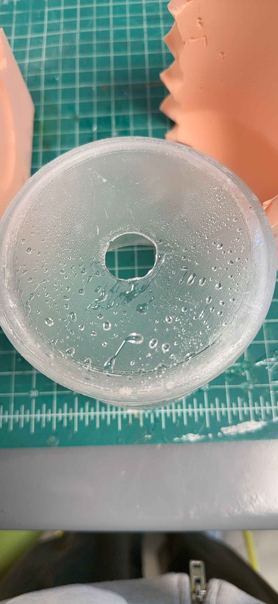
Sanding打磨
Wet sanding by hand: 60 → 120 → 240 → 400 → 600 → 1000 grit, sanding both inside and outside at each stage.
关于打磨，我们使用湿磨的方式，用砂纸手动打磨，从60 → 120 → 240 → 400 → 600 → 1000目逐步细化，内外都要打磨。
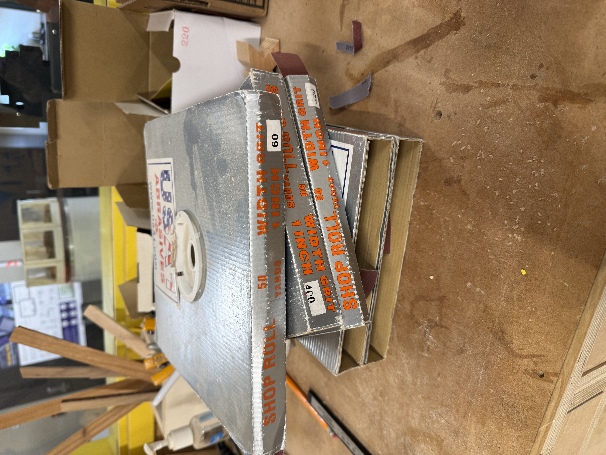
Wet sanding tip: keep the sandpaper soaked in water throughout. It dissipates heat — preventing the resin from micro-melting and clogging the abrasive — and traps the dust in the water instead of sending it airborne. When the rinse water turns cloudy, that's your signal that material is being removed. Much more efficient than dry sanding.
湿磨技巧：砂纸全程浸水，既能散热——防止树脂因摩擦微熔堵塞砂粒——又能将粉尘锁在水中，避免扬尘。水变浑浊正是材料被带走的信号，比干磨效率更高。
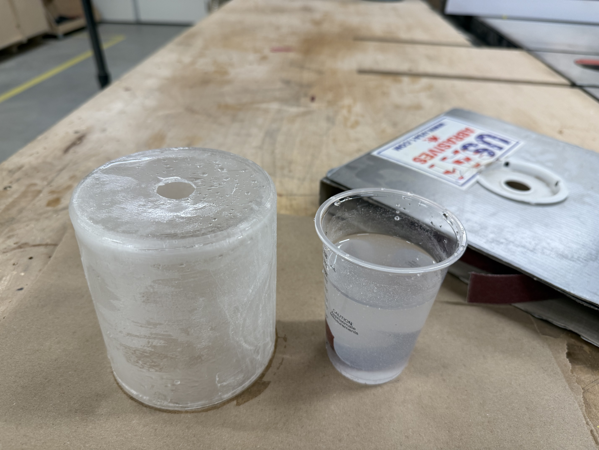
Sanding is extremely meditative. With a podcast in my ears, I find it genuinely enjoyable: watching a rough surface become smooth, the texture satisfying under my fingertips. The one thing to watch out for: don't over-sand and make the walls too thin. And make sure the coarse grits have removed all edges before moving on — skipping ahead just means more work at the fine end.
打磨是一个很考验耐心的流程，越粗糙的砂纸处理表面棱角的速度越快。所以在进入细的目数之前，确保已经用粗糙的目数打磨掉所有的棱角，再进入下一步，会省略很多不必要的折磨。我其实觉得打磨真的很解压，对我来说如果耳机里放着播客，打磨实在是一个令人享受的过程：看着粗糙的表面变得完美、手感令人舒适。唯一需要注意的就是不要过度打磨，以防让树脂的局部太薄。
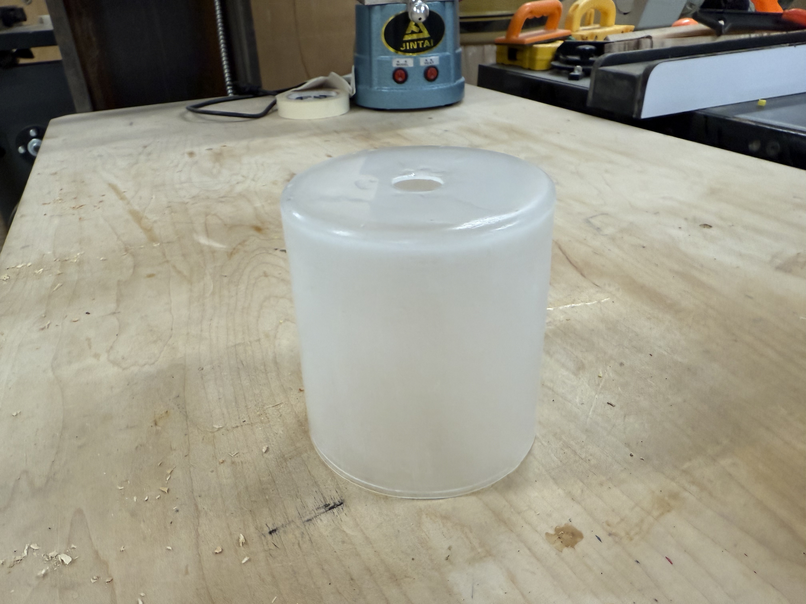
Part B第 B 部分
White Base — SLA Printing白色底座——SLA打印
With Kevin's guidance, we learned the general SLA workflow — which is actually fairly similar to FDM: model, export, arrange and add supports, slice, print, remove, strip supports, UV post-cure, sand. A few things are meaningfully different though.
在Kevin的帮助下，我们学习了光固化打印的大致流程，其实大致与普通的3D打印机操作相差不多：建模、导出、摆盘加支撑、切片、打印、取出、拆除支撑、UV光二次固化、打磨。不过有几点确实值得注意的不同之处。
FDM vs SLA: a few differences worth notingFDM 与 SLA：几点值得注意的差异
For the white base, we used water-washable white SLA resin. GIX's printer is an inverted resin machine — UV light cures one layer at a time from below, then the platform lifts to peel the cured layer off the bottom.
对于白色底座，我们选择用可水洗的白色树脂SLA打印。GIX的是倒挂式树脂打印机，每次用光照射固化一层树脂后，平台需要抬升，将固化的树脂从底部扯下来。
Orientation logic differs from FDM in a few ways. In FDM, the biggest concern is adhesion on the first layer — you usually place the flattest, largest face directly on the bed to maximize grip. In SLA, tilting the model 30–45° significantly improves success rate. Printing at an angle reduces the contact area per layer with the resin vat, and smaller area means less peel force as the platform rises — no vacuum suction effect. Kevin mentioned roughly this range, and I looked it up afterward; the literature agrees.
摆放的逻辑和FDM打印有些微不同。FDM打印时，我们主要考虑首层附着力，一般将最平坦、面积最大的面直接贴紧打印平台。对于SLA，将模型倾斜30–45°可以大大提高打印成功率。以一定角度打印模型，可以减少每个打印层与树脂槽的接触量，减小表面积意味着平台在每打印一层后上升时，打印件所受到的力更小，也不会形成真空吸盘效应。Kevin告诉我大概是这样，我事后查询了相关资料，确实。
One more observation: SLA slice files are image sequences rather than G-code motion paths, so they're much larger than FDM files. And because FDM speed depends on volume and path length while SLA speed depends only on layer count, SLA is surprisingly fast for flat, thin objects.
顺带一提，SLA打印的切片文件是光照射图像的图片序列，所以切片文件相较于FDM的运动路径gcode大很多。并且因为FDM的速度取决于体积和路径，而SLA的速度取决于层数，所以SLA在打很扁的对象的时候极快。
Post-processing: clean, cure, and sand后处理：清洗、固化与打磨
After printing, glove up and carefully detach the inverted platform — watch out for resin drips. GIX has two isopropyl alcohol tanks for washing: the first for initial cleaning (gets dirty fast, changed more often), the second for detail finishing.
SLA树脂打印后，带着手套将倒挂的平台拆下，注意防止打印机中带出的液体飞溅。GIX为树脂打印机准备了2个酒精容器槽：第一个进行初步处理，容易浑浊，更常换；第二个进行细节处理，比较干净。
Remove the model from the platform, soak in the first IPA tank, strip most supports by hand, then brush the surface gently to clear residual resin. Finish in the second tank. Keep the brush and model submerged as much as possible — avoids splashing.
从平台上取下模型后，放入第一个酒精容器中浸泡，用手拆除大部分支撑，然后用刷子轻轻扫过表面，清除附着的树脂液体。完成后在第二个容器内进一步清洁。使用刷子时，尽量让刷子和模型都置于液面下，防止酒精飞溅。
Once clean, UV cure under a lamp: 15 minutes one side, flip, 15 minutes the other. Repeat as needed until fully hardened. Then take it to the workshop and wet sand from 60 grit up to 1000.
清洁完成后，将模型放入UV照射灯下，照射15min，翻面后再照射15min；视情况反复，直到模型彻底固化。然后进入工坊内继续湿磨，从60目一直到1000目。
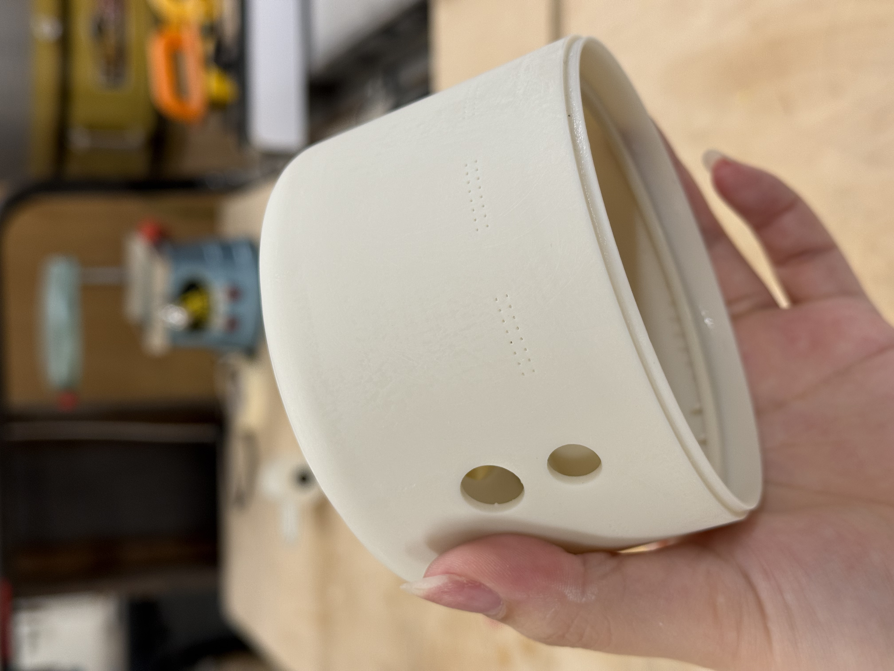
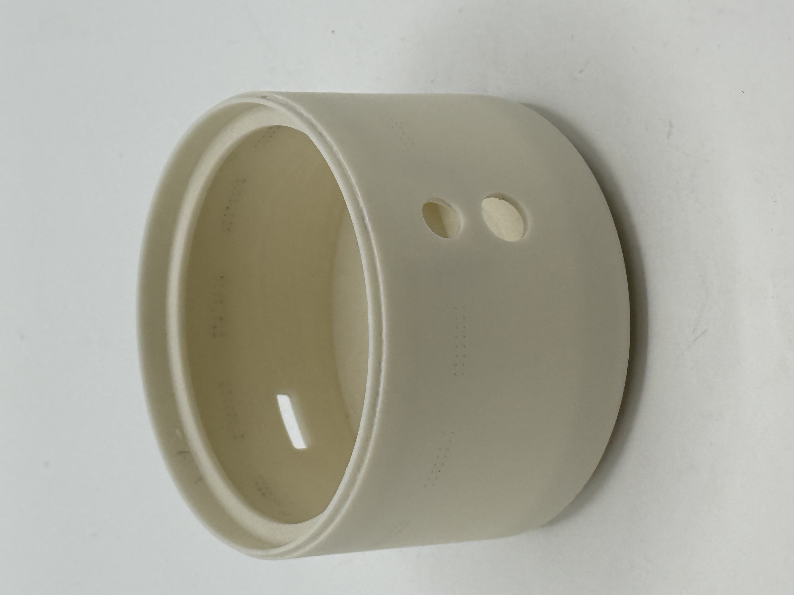
03 Knowledge Points知识点
Things to remember值得记住的事
Check the demold path before finalizing the mold design定稿模具设计前先检查脱模路径
Any shape that narrows after a wider section — a champagne flute, a T, anything with a re-entrant angle — creates an undercut. Once silicone cures around it, the master can't come straight out. Walk the demold path mentally before you hit print. If a cut is needed to demold, plan where it goes from the start.
任何先宽后窄的形状——高脚杯、T形、任何内凹角——都会造成undercut。一旦硅胶固化包裹其中，原件就无法直接取出。定稿之前在脑子里模拟一遍脱模路径。如果必须切割才能脱模，从一开始就规划好切割位置。
Never use glass as an internal placeholder in silicone硅胶内部占位结构绝对不要用玻璃
Silicone bonds strongly to smooth glass, and glass can't compress or flex — making it nearly impossible to remove once cured. Use a 3D-printed PLA part instead: rough surface, slightly elastic, and you can design a handle or beam for pulling. Kevin warned us. We ignored it. Don't.
硅胶与光滑玻璃的粘附力极强，而玻璃没有弹性，无法压缩或形变——固化后几乎不可能取出。应使用3D打印PLA件代替：表面粗糙，略有弹性，还可以设计把手或横梁方便拔出。Kevin警告过我们，我们无视了。不要重蹈覆辙。
Same-material resin repair creates a chemical bond同材料树脂修补形成化学键合
Filling a crack with the same resin doesn't just glue the surfaces together — it crosslinks with the surrounding material and becomes structurally one piece. After sanding, color, transparency, and texture match almost perfectly. Much stronger and more invisible than any adhesive repair.
用相同树脂填补裂缝，不仅仅是把表面粘在一起——它与周围材料发生交联，从结构上成为一体。打磨后颜色、透明度与质感几乎完全一致。比任何胶水修补都更牢固、更难察觉。
SLA orientation: tilt 30–45° for better resultsSLA摆放：倾斜30–45°效果更好
Unlike FDM (which prioritizes first-layer adhesion by placing the largest face flat), SLA benefits from a 30–45° tilt. The angle reduces per-layer contact area with the resin vat, cutting peel force as the platform rises and preventing vacuum-suction failures. It also cuts layer count for certain flat shapes, speeding up the print.
与FDM（将最大面平放以保证首层附着）不同，SLA从30–45°倾斜中受益更多。倾斜减少了每层与树脂槽的接触面积，降低平台上升时的剥离力，防止真空吸盘效应导致失败。对于某些扁平形状，倾斜还能减少层数，加快打印速度。
Wet sanding: keep the paper soaked, read the water湿磨：砂纸全程泡水，观察水的浑浊度
Soaked sandpaper dissipates heat (prevents the resin from micro-melting and loading up the abrasive) and traps dust in the water instead of releasing it into the air. When the rinse water turns cloudy, material is being removed — a useful real-time signal. Don't skip to finer grit before the current grit has removed all surface edges. Once those are gone, moving up becomes much faster.
浸水的砂纸能够散热（防止树脂微熔堵塞砂粒），并将粉尘锁在水中而不是散入空气。冲洗水变浑浊，就说明材料正在被带走——这是一个直观的实时信号。不要在当前目数还没磨平所有棱角之前就换更细的砂纸。一旦棱角消失，升目就会快得多。
04 Notes & Reflection笔记与反思
What I took away我的收获
Week 6 – 8 · Spring 2026第 6 – 8 周 · 2026年春季学期
This phase felt different from the earlier ones. Instead of practicing techniques in isolation, we were making something real — a part that actually needed to fit, look good, and work inside a product. That pressure surfaced a lot of overconfidence in our mold design. We thought we knew how to make molds by now. We didn't, not completely.
这个阶段和之前的感觉不同。不再是孤立地练习技术，我们在做一个真实的东西——一个需要配合、需要好看、需要在产品里实际运作的零件。这种压力把我们对模具设计的过度自信暴露出来了。我们以为自己已经会做模具了，其实还没有，不完全是。
The glass jar will stay with me as a lesson in not ignoring warnings you've already heard. The undercut was pure design laziness — we prioritized material savings over actually thinking through the demold. And the crack from drilling was just bad luck, but the recovery taught something useful: resin repairs its own kind better than any adhesive can.
玻璃杯这个教训会让我记住：不要无视你已经听到的警告。undercut则是纯粹的设计懒惰——我们优先考虑节省材料，而没有认真思考脱模。钻孔裂缝是运气不好，但修补过程教会了有用的东西：树脂修补自身材料的效果，比任何胶水都好。
And sanding. I didn't expect to enjoy it. There's something genuinely satisfying about watching a rough surface become smooth under your hands — especially when you know what it took to get there.
还有打磨。我没想到自己会喜欢上它。亲眼看着粗糙的表面在手下变得光滑，有一种真实的满足感——尤其是当你知道为了走到这一步付出了多少的时候。
- What worked: Same-material resin repair — the result was nearly invisible after sanding. The wiggle cut for demolding, though unplanned, still let the mold seal back together well enough to use. SLA post-processing was clean and well-supported by GIX's setup. 做得好的： 同材料树脂修补——打磨后效果几乎看不出来。z字型切割虽属无奈之举，但合回去之后密封效果依然够用。SLA后处理流程清晰，GIX的设备支持也很完善。
- What I'd do differently: Mentally walk the demold path before printing the master — especially for single-piece molds. Never use glass as a placeholder. Fillet all interior corners before finalizing the lid geometry. Drill pilot holes in brittle resin before going to full diameter. 下次会改变的： 打印母模之前先在脑子里模拟脱模路径——尤其是单体模。绝对不用玻璃做占位结构。在定稿盖子几何形状之前先把所有内角做圆角处理。在脆性树脂上钻孔先用小径钻头打导向孔。
- What this taught me for future work: Mold design experience doesn't accumulate as fast as you think. Each new shape introduces new failure modes. The repair mindset matters too — knowing you can recover from a crack or a bad demold makes the whole process less precious and more iterative. 对未来工作的启示： 模具设计经验的积累没有你想象的那么快。每一个新形状都会带来新的失败方式。修补的心态同样重要——知道自己可以从裂缝或脱模失败中恢复，会让整个过程更轻松、更具迭代性。